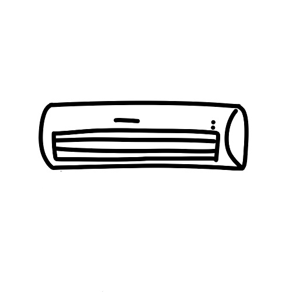

    <div *ngIf="aaa==1" class="d-flex justify-content-center">
        
    </div>
    <div *ngIf="aaa==0" class="d-flex justify-content-center">
        
    </div>

    <div class="d-flex justify-content-center">
        <button class="btn btn-success" (click)="acturnOn()">打开</button>
        <button class="btn btn-warning" (click)="acturnOff()">关闭</button>
        <button class="btn btn-primary" [routerLink]="['../product']">返回</button>
    </div>
